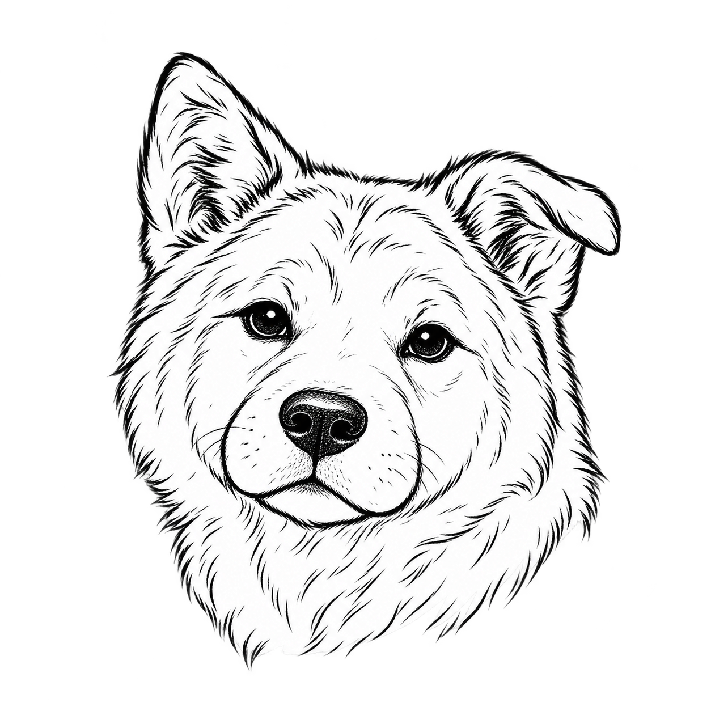

Hub — current layout reference
Cards follow the shelf’s order; bars separate groups. This reference carries the existing palette, Hachi and Torii into the current compact Hub structure. Browser glass and symbols are approximations; translate to SwiftUI.

2Layout targets: 320 pt minimum cards, 12 pt padding, 16 pt corners, 10 pt grid gaps. The Hub Torii is a bare 20 pt glyph, white at 55% in Threads and full white in the Hub, within its existing 34 pt hit frame. No circle or rim.
A card click opens its thread. One action row holds Open Maximized, optional Restart and Hachi, then Finder, VS Code and Zed. Idle cards trade their summary for a five-line screen box. The only pending visual change shown here is the centered shortcut-number marker; the app still uses the overhanging leading badge.